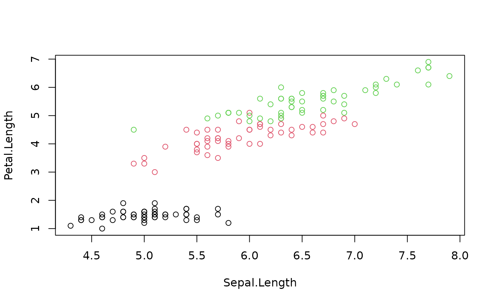

marginalLikelihood.RdThis is the numerator of the Bayes factor: assume that all observations come from the same source. Implemented in C.
marginalLikelihood( X, n.iter, B.inv, W.inv, U, nw, mu, burn.in, output.mcmc = FALSE, verbose = FALSE, Gibbs_only = FALSE )
| X | the observation matrix (\(n \times p\): n = observation, p = variables) @param U covariance matrix for the mean (\(p \times p\)) |
|---|---|
| n.iter | number of MCMC iterations excluding burn-in |
| B.inv | prior inverse of between-source covariance matrix |
| W.inv | initialization for prior inverse of within-source covariance matrix |
| nw | degrees of freedom |
| mu | prior mean (\(p \times 1\)) |
| burn.in | number of MCMC burn-in iterations |
| output.mcmc | if TRUE output the entire chain as a coda object, else just return the log-ml value |
| verbose | if TRUE, be verbose |
| Gibbs_only | if TRUE, only return the Gibbs posterior samples. Implies |
the log-marginal likelihood value, or a list:
value: the log-ml value
mcmc: a coda object with the posterior samples
See diwishart_inverse for the parametrization of the Inverted Wishart.
See marginalLikelihood_internal for further documentation.
Described in (Bozza et al. 2008) .
Observation level:
$$X_{ij} \sim N_p(\theta_i, W_i)$$ (i = source, j = items from source)
Group level:
$$\theta_i \sim N_p(\mu, B)$$
$$W_i \sim IW_p(\nu_w, U)$$
Hyperparameters:
$$B, U, \nu_w, \mu$$
Posterior samples of \(\theta\), \(W^{(-1)}\) can be generated with a Gibbs sampler.
Uses (Press 2012) parametrization.
$$X \sim IW(\nu, S)$$ with \(S\) is a \(p \times p\) matrix, \(\nu > 2p\) (the degrees of freedom).
Then: $$E[X] = \frac{S}{\nu - 2(p + 1)}$$
Bozza S, Taroni F, Marquis R, Schmittbuhl M (2008).
“Probabilistic Evaluation of Handwriting Evidence: Likelihood Ratio for Authorship.”
Journal of the Royal Statistical Society: Series C (Applied Statistics), 57(3), 329-341.
ISSN 1467-9876, doi: 10.1111/j.1467-9876.2007.00616.x
.
Press SJ (2012).
Applied Multivariate Analysis: Using Bayesian and Frequentist Methods of Inference.
Courier Corporation.
Other core functions:
bayessource-package,
get_minimum_nw_IW(),
make_priors_and_init(),
marginalLikelihood_internal(),
mcmc_postproc(),
samesource_C(),
two.level.multivariate.calculate.UC()
# Use the iris data df_X <- iris[, c(1,3)] X <- as.matrix(df_X) p <- ncol(X) # Observations plot(X) # True species plot(X, col = iris$Species)  # Priors B.inv <- diag(p) W.inv <- diag(p) U <- diag(p) mu <- colMeans(X) # d.o.f. nw <- get_minimum_nw_IW(p) # Computational parameters n_iter <- 10000 n_burn_in <- 1000 # Compute the marginal likelihood marginalLikelihood( X = X, n.iter = n_iter, B.inv = B.inv, W.inv = W.inv, U = U, nw = nw, burn.in = n_burn_in, mu = mu ) #> [1] -389.6291 # Diagnostics ------------ # Retain the full Gibbs output list_mcmc <- marginalLikelihood( X = X, n.iter = 10000, B.inv = B.inv, W.inv = W.inv, U = U, nw = get_minimum_nw_IW(p), burn.in = 1000, mu = mu, output.mcmc = TRUE ) # The log-ML value list_mcmc$value #> [1] -389.6172 # The full Gibbs chain output library(coda) head(list_mcmc$mcmc, 20) #> Markov Chain Monte Carlo (MCMC) output: #> Start = 1001 #> End = 1021 #> Thinning interval = 1 #> theta.1 theta.2 W.inv.1 W.inv.2 W.inv.3 W.inv.4 #> [1,] 5.898239 3.811222 7.011690 -2.891335 -2.891335 1.555184 #> [2,] 5.927134 3.937147 6.576140 -2.745591 -2.745591 1.489662 #> [3,] 5.770463 3.479544 6.292374 -2.449272 -2.449272 1.282902 #> [4,] 5.810105 3.758315 5.929512 -2.296870 -2.296870 1.207949 #> [5,] 5.680161 3.371093 6.800086 -2.686530 -2.686530 1.349990 #> [6,] 5.836394 3.757327 4.765470 -1.886765 -1.886765 1.051854 #> [7,] 5.768559 3.674916 5.514650 -2.095875 -2.095875 1.056083 #> [8,] 5.899820 3.943731 5.722077 -2.258172 -2.258172 1.188828 #> [9,] 5.782385 3.701671 6.541726 -2.671059 -2.671059 1.420142 #> [10,] 5.849733 3.744221 6.694601 -2.737320 -2.737320 1.512495 #> [11,] 5.826484 3.843107 6.015471 -2.459960 -2.459960 1.363562 #> [12,] 5.891090 3.782015 5.184274 -2.038621 -2.038621 1.111419 #> [13,] 5.829639 3.685075 6.055362 -2.549394 -2.549394 1.436956 #> [14,] 5.841186 3.757739 5.308610 -2.186497 -2.186497 1.259971 #> [15,] 5.852877 3.754006 5.928448 -2.242769 -2.242769 1.162160 #> [16,] 5.831648 3.745047 5.485581 -2.240708 -2.240708 1.225495 #> [17,] 5.814808 3.863164 6.271212 -2.608636 -2.608636 1.416767 #> [18,] 5.885241 3.852222 5.798279 -2.310417 -2.310417 1.259523 #> [19,] 5.949191 4.022692 6.312793 -2.828027 -2.828027 1.548513 #> [20,] 5.864020 3.732325 7.045109 -2.748375 -2.748375 1.407702 #> [21,] 5.867916 3.785798 5.764394 -2.599724 -2.599724 1.532775 # Diagnostics plots by coda plot(list_mcmc$mcmc) coda::autocorr.plot(list_mcmc$mcmc)